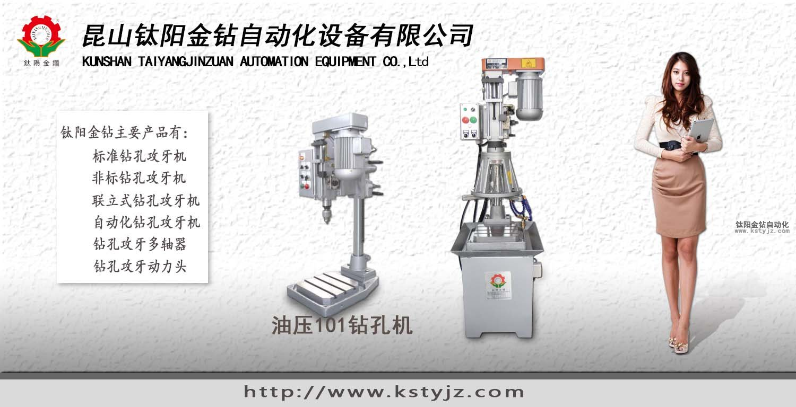

鑽孔機如何選擇,台式自動鑽孔使用說明
文章出處：鈦陽金鑽責任編輯：kstyjz人氣：發表時間：2014-08-28 10:14
感謝您使用本公司生產的“鈦陽金鑽”台式系列空壓自動鑽孔機。該產品採用氣壓驅動進給，速度快，可實行自動化生產。適合於大批量的小型零件加工。
在使用本機床之前，請您仔細閱讀本操作說明書，這有利於您正確的操作和保養機床，並能使您的機床保養良好的工作狀態。

如機床在以後的生產中，零件尺寸或結構稍有變動，恕不另作說明
一、 機床主要技術參數
| 序號 | 項 目 | ＪＤ1-101 |
| 1 | 工作台尺寸範圍 | 260mm*260mm |
| 2 | 立柱外徑 | Φ60 |
| 2 | 主軸外徑 | Φ50 |
| 3 | 主軸錐度 | JT6 |
| 4 | 主軸行程 | 70mm |
| 5 | 主軸轉速 | 時規皮帶，單級調速 |
| 6 | 主軸功率 | 1HP/4H |
| 7 | 主軸最大鑽孔能力 | Φ10 |
| 8 | 標準壓力 | 5Kg/Cm2 |
二、 各部分名稱說明
1、機身 2、電控箱3、方型升降座 4、立柱
5、緩衝器 6、、馬達罩
7、行程感應開關上、下限
三、 電控箱名稱說明
1、自動啟動(綠色按鈕)：按一下此開關，電機馬達啟動同時主軸向下運動，。
2、緊急停止開關（紅色按鈕）：
按一下此開關，主軸逆時針旋轉並返回上止點直至停止。遇緊急狀況時按此開關。
3、主軸 上升/下降(黑色轉位)：
選擇手動主軸上升（左位）或是 手動主軸下降（右位）。
4、主軸 手動/自動(黑色轉位)：
在手動模式下，打開此開關主軸開始旋轉；在自動模式下，打開此開關，按動綠色啟動開關時，主軸下降並開始轉動。
四、 機床調整說明
1、進刀深度調整１裝上合適的刀具，並調整好刀具伸出的工作長度。
２轉動下限行程螺母，使其足夠到加工行程。
３轉動主軸 手動/自動(黑色轉位)開關到中間空擋位置。
４按住主軸 上升/下降(黑色轉位)“上升”按鈕，使主軸到達所需停止位置。
５調整上限行程螺母，使之能感應到上升行程開關（行程開關燈亮）。
６按住“下降”按鈕，使主軸到達所需工作深度。
７調整下限行程螺母，使之能感應到下降行程開關（行程開關燈亮）。
８行程調整完成，鎖緊方向固定螺母，使其限制上、下行程螺母轉動。
以上進刀深度調整完成。
2、快進、工進行程調整
１快進：下壓緩衝器螺絲未碰到緩衝器壓縮桿之前的距離為快進行程。
２工進：下壓緩衝器螺絲接觸到緩衝器壓縮桿並向下壓縮之後的行程為工進行程。
３調整時，根據具體所需的快進轉工進的位置，通過幾次調整來調整下壓緩衝器螺絲桿的位置，使其滿足加工中快進，工進的需要並固定。
3、進刀速度的調整
緩衝上的旋鈕開關，控制流量，達到控制進刀快慢的調整，根據其刻度，小的為速度慢，大的為速度快。
4、空氣壓力調整
系統標準壓力5kgf/Cm2 ，調整時，轉動壓力調整螺母，看到壓力表的指針指向多少刻度，即為所調的系統壓力。
五、主軸轉速調整說明
如要換速，請調整時規皮帶輪的大小。六、操作說明
1、打開電源“ON”，電源指示燈亮。
2、按下主軸 手動/自動(黑色轉位)：
在手動模式下，打開此開關主軸開始旋轉，若此時主軸轉動方向為順時針旋轉，則接電正確，反正需要調換線的位置。
3、主軸 手動/自動(黑色轉位)開關打到空擋位置，轉動選擇手動主軸上升（左位）或是 手動主軸下降（右位），測試機器高度位置是否合適，並調整好機器快進及全行程位置。
4、按“上升”按鈕，使主軸上升到底。
5、主軸 手動/自動(黑色轉位)開關打到“自動”位置。
6、於夾具中裝入工件。
7、按“自動啟動”，完成一個工件的加工。
七、機床維護
1、維修或保養時，首先必須停止機床運行和切斷電源。2、經常清洗馬達、機身上的灰塵，以便保證正常散熱。
3、不用時，清理乾淨並上油後用塑膜(袋)包裝工作台，以便立柱保持乾淨，不生蛂C
4、每台機床都必須配上相符的單獨控制漏電斷路器，保證機床正常使用和人身安全。
5、電源線損壞要及時更換。
6、插頭拔出時，勿直接拉電線，須直接拔插頭，以免損壞接觸部位。
7、定期給主軸導桿等需潤滑的部位加油。
8、、須有合格的專業人員才能執行維修或保養電控系統。
9、特別提醒：定期給導螺桿注油，可延長牙桿壽命。


推薦文章
- 攻牙機動力頭生產廠家
- 鑽孔攻牙機設備及配件
- 攻牙機生產廠家
- 攻牙機原理,多功能機床
- 鑽孔攻牙機哪家好,鈦陽
- 鑽孔機如何選擇,台式自
- 如何選擇鑽孔機,從幾點
- JD-20台式自動鑽孔機,鑽
- 電動攻牙機,氣動攻牙機
- 什麼是多頭攻牙機,多頭